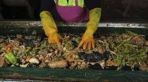

Tentang Kami

EcoGrow adalah pupuk organik dari limbah makanan yang diolah secara alami menjadi nutrisi berkualitas tinggi untuk tanaman.
Kenapa Memilih EcoGrow?

EcoGrow membantu mengurangi limbah sekaligus meningkatkan kesuburan tanah. Kandungan organiknya memperbaiki struktur tanah, meningkatkan mikroorganisme, dan membantu tanaman tumbuh lebih optimal.
Kelebihan Kami:
Ramah Lingkungan
Mengurangi limbah makanan
Praktis
Mudah digunakan kapan saja
Hemat
Harga terjangkau
Beli Sekarang!
Jangan tunggu tanah menjadi tidak subur. Saatnya beralih ke solusi alami!
Beli Sekarang